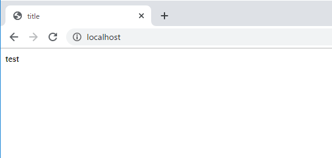
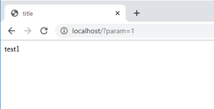
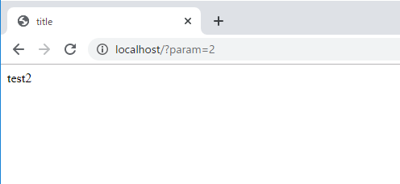
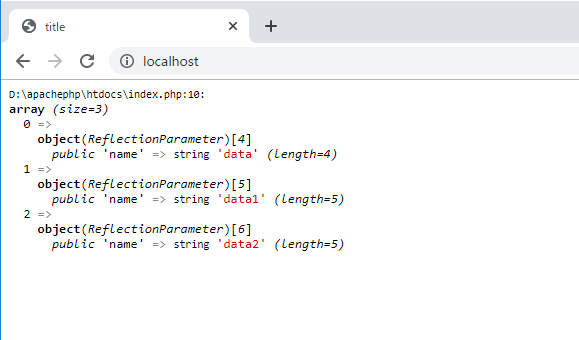
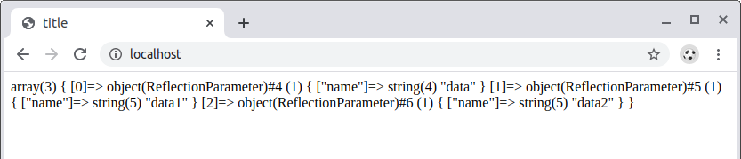

こんにちは。明月です。
前述でReflectionでクラス<を探してインスタンスを生成する方法、インスタンスの中で変数や関数を探す方法まで説明しました。
link - [PHP] Reflection - Class編
今回はReflectionを利用してクラスで関数を探して実行する方法まで調べてみます。
<?php
class EXClass {
public function test() {
return "test";
}
public function test1() {
return "test1";
}
public function test2() {
return "test2";
}
}
// Query Stringパラメータのparamから値を受取る。
$param = @$_GET["param"];
// ReflectionでEXClassを探す。
$r = new ReflectionClass('EXClass');
// インスタンスを生成する。
$obj = $r->newInstance();
// paramパラメータによってtest関数や、test1関数を呼出す。
$m = $r->getMethod("test".$param);
// 関数を実行する。(パラメータが無いので、初めのパラメータに実行するインスタンスだけ渡す)
$data = $m->invoke($obj);
?>
<!DOCTYPE html>
<html>
<head><title>title</title></head>
<body>
<?=$data?>
</body>
</html>



上の結果をみればQuery Stringのパラメータによって呼出す関数を違うし結果も別で表示されます。
もし、Reflectionがなければ下記とおりに作成したと思います。
$obj = new EXClass();
$data = "";
// Query String paramを受取る。
$param = @$_GET["param"];
// パラメータデータによって呼出す関数を分ける。
if($param == "1") {
$data = $obj->test1();
} else if($param == "2") {
$data = $obj->test2();
} else {
$data = $obj->test();
}
ここでEXClassのクラスの関数が仕様によって増えると考えば「if ~ else」も増えますよ。上の場合は簡単な例なので差をそんなに体感されないですが、拡張的に考えたらもっと複雑なプログラムならすごく複雑なロジックになるでしょう。
Reflection機能でこの関数を動的に呼出すだけではないです。関数がpublicではないアクセス修飾子も呼出すことができます。
<?php
class EXClass {
public function test1() {
return "test";
}
private function test2() {
return "test1";
}
protected function test3() {
return "test2";
}
}
// Reflectionでクラスを探す。
$r = new ReflectionClass('EXClass');
// インスタンスを生成する。
$obj = $r->newInstance();
// インスタンスから「test1」、「test2」、「test3」のメソッドを取得する。
for($i=1; $i <= 3; $i++) {
$m = $r->getMethod("test".$i);
// private、protectedの場合、外部で呼出すができるように設定する。
$m->setAccessible(true);
// 関数をインスタンスから呼出す。
$data[] = $m->invoke($obj);
}
?>
<!DOCTYPE html>
<html>
<head>
<title>title</title>
</head>
<body>
<?=$data[0]?><br />
<?=$data[1]?><br />
<?=$data[2]?><br />
</body>
</html>

上の例をみれば「test2」と「test3」関数はpublicではなく、privateやprotectedに設定されています。
そうすると基本的にクラス外部では呼出すことができません。でも、Reflectionの「setAccessible」関数を利用してアクセスができるように設定して呼出しました。
<?php
class EXClass {
public function test($data, $data1, $data2){
return "test";
}
}
$r = new ReflectionClass('EXClass');
$obj = $r->newInstance();
$m = $r->getMethod("test");
// test関数のパラメータ内訳を出力
var_dump($m->getParameters());
?>
<!DOCTYPE html>
<html>
<head><title>title</title></head>
<body></body>
</html>

phpの場合はクラスのメソッドのオーバーロード（同じメソッド名にパラメータのタイプと個数で関数を区別すること）がありません。
それで特にReflectionでメソッドを検索する時にパラメータのタイプや個数の情報はいらないです。Invoke関数を呼び出す時にパラメータの数が一致しないとエラーが発生するため、パラメータの検証が必要になる場合があります。
phpの場合は別に変数の型がないので、変数名と個数で検証処理をすれば良いと思います。
link - https://www.php.net/manual/en/class.reflectionmethod.php
- [CakePHP] RequestとResponseに関して2020/02/12 03:00:02
- [CakePHP] PHPのCakeからAjax要請がある時、jsonタイプ(json_encode関数)でResponseする方法とControllerでViewを選択する方法2020/02/08 03:00:00
- [CakePHP] MVCフレームワークのCakeをインストールする方法2020/02/07 03:00:02
- [PHP] 自動require及びincludeをする方法(spl_autoload_register)2020/02/05 03:00:00
- [PHP] 匿名関数(ラムダ式)とクロージャ(closure)2020/02/04 03:00:00
- [PHP] PHPのコーディング領域とデザイン領域を分離するテンプレートライブラリ Smarty2020/02/02 03:00:00
- [PHP] Reflection - Variable編2020/02/01 03:00:00
- [PHP] Reflection - Method編2020/01/31 03:00:00
- [PHP] Reflection - Class編2020/01/30 03:00:00
- [PHP] エラーページ処理方法(追加: ob_cleanとdie関数使用方法)2020/01/29 03:00:00
- [PHP] 分散設定ファイル(.htaccess) 使用方法2020/01/28 03:00:00
- [PHP] データベース(mariaDB)を連結して使う方法2020/01/24 03:00:00
- [PHP] IOに関して2020/01/23 03:00:00
- [PHP] requireとinclude、そして「@」の使用方法2020/01/22 03:00:00
- [PHP] Fatal及びNotice,、Warningメッセージ処理する方法2020/01/19 03:00:00
- [C#] 49. Operator(演算子)のオーバーロードを使い方2021/10/12 18:28:42
- [C#] 48. IEnumerableとIEnumerator、そしてyieldキーワード2021/10/11 19:49:33
- [C#] 47. Nugetを使い方(外部ライブラリ)とデータベース(MariaDB(Mysql))を使い方、そしてトランザクション(Transaction)2021/10/08 18:58:57
- [Window] MariaDBをインストールする方法2021/10/08 18:56:05
- [C#] 46. データベース(MSSQL)に接続する方法2021/10/07 18:39:58
- [C#] 45. ネットワークソケット通信(Socket)を使い方2021/10/06 19:06:25
- [C#] 44. ファイル(FileInfo)とディレクトリ(DirectoryInfo)を扱い2021/10/05 19:29:34
- [C#] 43. ストリーム(Stream)とバイナリ(byte[])、エンコード(Encoding)、そしてusingを使い方とIDisposableインターフェース2021/10/04 18:33:04
- [C#] 42. ファイルを扱い(IO)とファイルメタデータ(FileInfo)を使い方2021/10/01 20:10:21
- [C#] 41. Taskクラスとasync、awaitを使い方2021/10/01 18:59:14
- [Javascript ] WebのFull calendar(スケジュールカレンダー)の使い方法2021/07/15 21:35:36
- [Java] 56. Web serviceのサーブレット(Servlet)で初期化作業(properties設定)2021/07/02 17:10:36
- [Java] 55. Spring frameworkに文字化けを解決する方法(Encoding設定)2021/06/30 16:37:16
- [Java] 54. Spring frameworkでWeb filterを使う方法2021/06/29 18:25:12
- [Java] 53. ウェブサービス(Web service)でエラーページを処理する方法2021/06/25 13:35:54